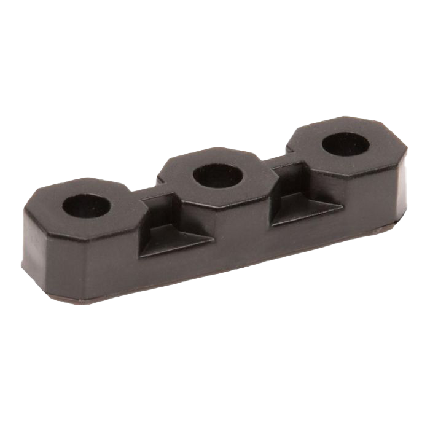

General Tips
Use Bearing Blocks – Use a bearing block everywhere there is a pivot or for axles. Bearing blocks help to reduce friction and help centre axles in the c-channel holes.

Axle Supports – Make sure axles are supported by two pieces of parallel metal. When one piece of metal is used, the piece of metal acts as a pivot point. As a result of this, the accuracy and the reliability of the axle.
Materials – The majority of your robot will be constructed from c-channel. C-channel comes it two variants, aluminium and steel. Steel is double the weight of aluminium; however, both have their uses. Since aluminium is lighter, it puts much less strain on the motors and as such, most of your robot should be constructed from it. As a rule of thumb, drives can be constructed from steel or aluminium, lifts should be constructed from mostly aluminium to reduce unnecessary weight, and high torque components such as a catapult should be made from steel.